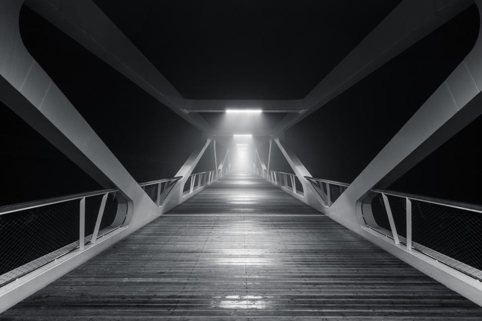
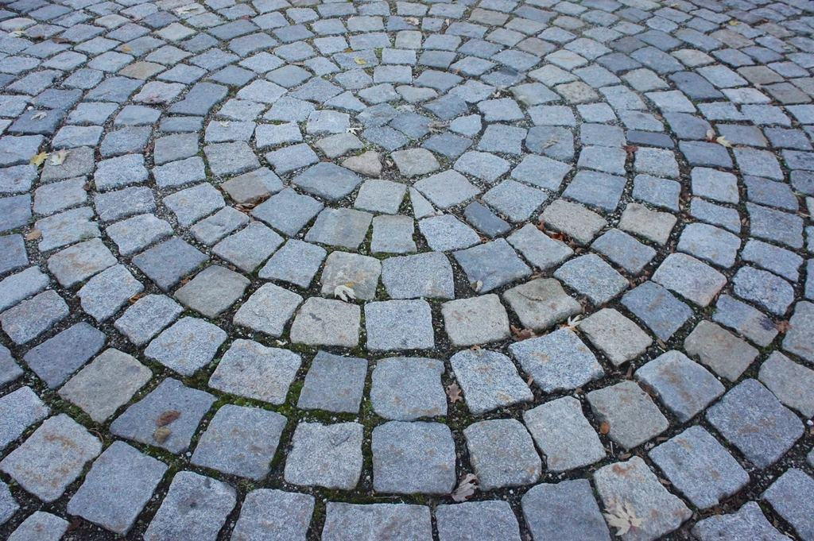
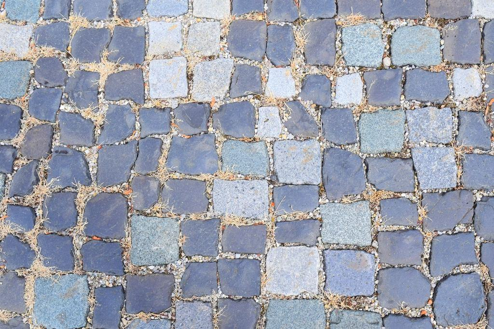

Tjänster
Vi har en egen grus- och bergtäkt i Bonäs norr om Mora med tillstånd för 90 000 ton per år, och vi tillverkar bärlager, slitlager och makadam själva. Det gör att vägsamfälligheterna får rätt material till ett pris som inte beror på någon annans lager.
Vilken väg gäller det?
Väghållning för samfälligheter
Vi sköter 64 vägsamfälligheter med sammanlagt drygt 600 kilometer väg. Varje väg får ett årsprogram med vårhyvling, grusning, dikesrensning och höstkontroll av trummor.
Styrelsen får en rapport efter varje insats, med bilder och mängd utlagt material.

Vägförbättring
När en väg sätter sig varje tjällossning hjälper det inte att grusa mer. Vi gräver ur det gamla materialet, lägger geotextil och bygger upp ett nytt bärlager med dränering och nya trummor.
Förbättringen planeras så att bidrag från Trafikverket kan sökas för större delen av kostnaden.

Egen täkt i Bonäs
I täkten krossar och sorterar vi grus och berg till CE-märkta produkter för vägbyggen, husgrunder och trädgårdar. Privatpersoner och entreprenörer hämtar själva eller får det hemkört.
Täkten är öppen för hämtning vardagar 6.30–16.

Skog och fäbod
Vi bygger och rustar skogsbilvägar och vägar upp till fäbodvallar där virkesbilar och turister ska kunna mötas. Ofta i terräng där det inte finns någon annan väg för maskinerna.
Vi har två bandgrävare med låg marktryck för blöt skogsmark.
Så går ett år med oss
- 1

Vägvandring
Vi går eller kör vägen med styrelsen och noterar sättningar, trummor och diken.
- 2

Årsprogram
Ni får en plan för året med insatser, mängder och pris per kilometer.
- 3

Utförande
Vi hyvlar, grusar och rensar enligt programmet och meddelar fastighetsägarna via sms.
- 4
Rapport till stämman
Efter säsongen får styrelsen en rapport att visa på årsstämman.
Tillstånd och behörigheter
- CE-märkt ballastAlla produkter från täkten är CE-märkta och provas enligt standarden för obundna material.
- TäkttillståndTillstånd enligt miljöbalken från Länsstyrelsen Dalarna, giltigt till 2041.
- Arbete på vägHela väglaget är utbildat för vägarbete på nivå 1 och 2 – viktigt där vi hyvlar längs allmän väg.
- MaskinentreprenörernaMedlemmar i ME och följer branschens avtal för väghållning och entreprenad.